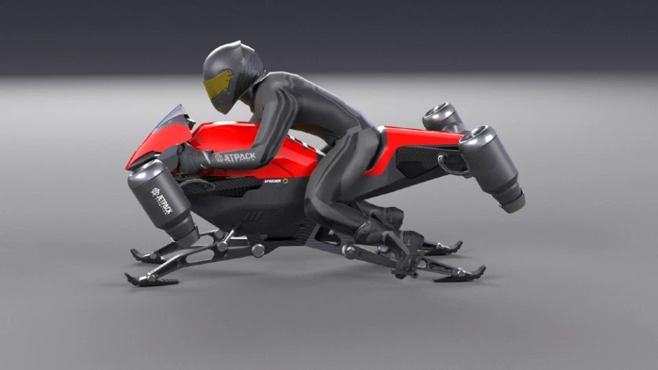

ဒီ Jetpack Aviation ရဲ့ ကြေငြာချက်အရ ဂျက်အင်ဂျင် စွမ်းအင်သုံး စမ်းသပ် မိုးပျံဆိုင်ကယ် ကို အောင်မြင်စွာ ပျံသန်းနိုင်ခဲ့တယ် လို့ ဆိုပါတယ်။ ဒီ ကုမ္ပဏီက နောက်နှစ်အနည်းငယ် အတွင်းမှာ မိုးပျံ မော်တော် ဆိုင်ကယ် အမျိုးအစား နှစ်မျိုးကို ထုတ်လုပ်ရောင်းချ မယ်လို့ ကြေငြာချက်မှာ ဖေါ်ပြပါရှိပါတယ်။
Speeder လို့ နာမည်ပေးထားတဲ့ ဒီ မိုးပျံ ဆိုင်ကယ်ကို ထိန်းကျောင်း နိုင်ဖို့ Jetpack Aviation ရဲ့ ကိုယ်ပိုင် ပျံသန်းမှု ထိန်းကျောင်းရေး ကွန်ပြူတာနဲ့ ပရိုဂရမ်ကို အသုံးပြု ထားပါတယ်။ ဒီ ပျံသန်းမှု ထိန်းချုပ်ရေး ပရိုဂရမ်ကို Jetpack Aviation က ကိုယ်တိုင် ရေးဆွဲတာ ဖြစ်ပါတယ်။ ဒီ ပရိုဂရမ် ရေးတာတင် တစ် နှစ်ခွဲလောက် ကြာပါတယ်။
“ကျွန်တော်တို့ ကုမ္ပဏီ အနေနဲ့ အပေါ့စား Speeder မိုးပျံ မော်တော်ဆိုင်ကယ် အမျိုးအစားကို ၂ နှစ်အတွင်း ထုတ်လုပ်နိုင်မှာ ဖြစ်ပါတယ်။ ဒီ အပေါ့စား (ultralight) မိုးပျံဆိုင်ကယ် မောင်းဖို့က လေယာဉ်မောင်း လိုင်စင် မလိုပါဘူး။ ပြီးတော့ စမ်းသပ် မိုးပျံ ဆိုင်ကယ်ကို ဒီ အပေါ့စား ဆိုင်ကယ်ထုတ်ပြီး နောက် ၆ လအတွင်း ဆက်ထုတ်သွားဖို့ ရှိပါတယ်” လို့ Jetpack Aviation ရဲ့ အမှုဆောင် အရာရှိချုပ် (CEO) ဒေးဗစ် မေမန်း (David Mayman) က ပြောပါတယ်။
ဒီ အပေါ့စား မိုးပျံဆိုင်ကယ်ကို အမြန်နှုန်း မိုင် ၆၀ မှာ ကန့်သတ်ထားမှာ ဖြစ်ပါတယ်။ ဒါကလဲ ဖက်ဒရယ် လေကြောင်း အာဏာပိုင် အဖွဲ့ရဲ့ စည်းမျဉ်းစည်းကမ်း ကြောင့်ပါ။ စုစုပေါင်း ပျံသန်းချိန် ၁၅ မိနစ် အထိ ပျံသန်းနိုင်မှာ ဖြစ်ပါတယ်။

ယခု စမ်းသပ်ပျံသန်းတဲ့ မိုးပျံမော်တော် ဆိုင်ကယ်မှာ ဂျက်အင်ဂျင် ၄ လုံး တပ်ဆင်ထားပါတယ်။ ဒါပေမယ့် ဈေးကွက်တင် ရောင်းချမယ့် မိုးပျံဆိုင်ကယ်မှာတော့ အင်ဂျင် ၈ လုံး တပ်ဆင်ထားမှာ ဖြစ်ပါတယ်။ ၄ လုံးက ပျံသန်းရေး အတွက် အသုံးပြုပြီး ကျန် ၄ လုံးကတော့ အရန်အနေနဲ့ ပင်မ အင်ဂျင် ပျက်သွားရင် အစားထိုးဖို့ ဖြစ်ပါတယ်။ ဒီ အရံ အင်ဂျင် ၄ လုံးကို မော်တော်ဆိုင်ကယ်ရဲ့ ထောင့် ၄ ထောင့်မှာ တစ်လုံးစီ တပ်ဆင်ထားမှာ ဖြစ်ပါတယ်။ ဒါ့ကြောင့် ပင်မ အင်ဂျင် ၄ လုံးလုံး ပျက်သွားရင်တောင် အန္တရာယ် ကင်းစွာ ဆက်လက်ပျံသန်းနိုင်မှာ ဖြစ်ပါတယ်။
ဒီလို အင်ဂျင် ၈ လုံး တပ်ဆင်ထားတဲ့ အတွက် တွန်းကန်အားလဲ ပိုမို ရရှိနိုင်မှာ ဖြစ်ပါတယ်။ ဒီ မော်တော် ဆိုင်ကယ်ရဲ့ အလေးချိန်က ပေါင် ၃၀၀ လေးမှာ ဖြစ်ပြီး စုစုပေါင်း ပေါင်ချိန် ၆၀၀ အလေးချိန် သယ်ဆောင်ပျံသန်းနိုင်မှာပါ။ ဒီလို ၂ ဆ တစ်ဆ သယ်ဆောင်နိင်စွမ်းဟာ လက်ရှိ ဈေးကွက်မှာ ရောင်းချနေတဲ့ ဒေါင်လိုက်တက်ဆင်း မိုးပျံယာဉ်တွေထက် သာပါတယ်။
ယခုလက်ရှိ စမ်သပ်နေတဲ့ မိုးပျံဆိုင်ကယ် ကို အဆင့်မြှင့်ထားတဲ့ ဗားရှင်း ၂.၀ ကို လာမယ့် နွေရာသီမှာ ထပ်မံပြီး အသေးစိတ် စမ်းသပ်မှုတွေ ပြုလုပ်မယ်လို့ သိရပါတယ်။
လာမယ့် အနာဂါတ်မှာ စစ်ဖက်ဆိုင်ရာ အဖွဲ့အစည်းတွေနဲ့ ဥပဒေ စိုးမိုးရေး အဖွဲ့အစည်းတွေ အသုံးပြုဖို့ မိုးပျံဆိုင်ကယ် အမျိုးအစားတွေ ထုတ်လုပ်သွားဖို့လဲ ရည်မှန်းထားပါတယ်။ ဒီ အမျိုးအစား တွေမှာတော့ ဖြုတ်လို့ တပ်လို့ ရတဲ့ တောင်ပံတွေ ပါဝင်မှာ ဖြစ်ပါတယ်။ နောက်ပြီး ပစ္စည်း သယ်ဆောင်ဖို့ နေရာတွေ နဲ့ ဒါဏ်ရာရသူတွေ သယ်ဆောင်ဖို့ နေရာတွေလဲ ပါဝင်မယ်လို့ သိရပါတယ်။
အပေါ့စား မိုးပျံဆိုင်ကယ်ရဲ့ ဈေးကို လက်ရှိမှာတော့ US ဒေါ်လာ ၃၈၁,၀၀၀ သတ်မှတ်ထားပြီး အော်ဒါတွေကို စတင် လက်ခံ နေပြီလို့ သိရပါတယ် ခင်ဗျာ။
Reference: Forget Flying Cars. The World’s First Flying Motorcycle Is Coming